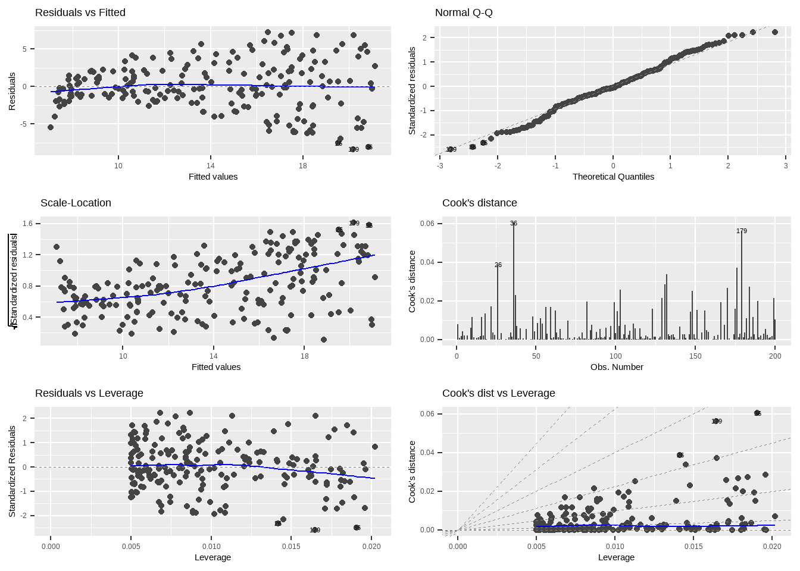
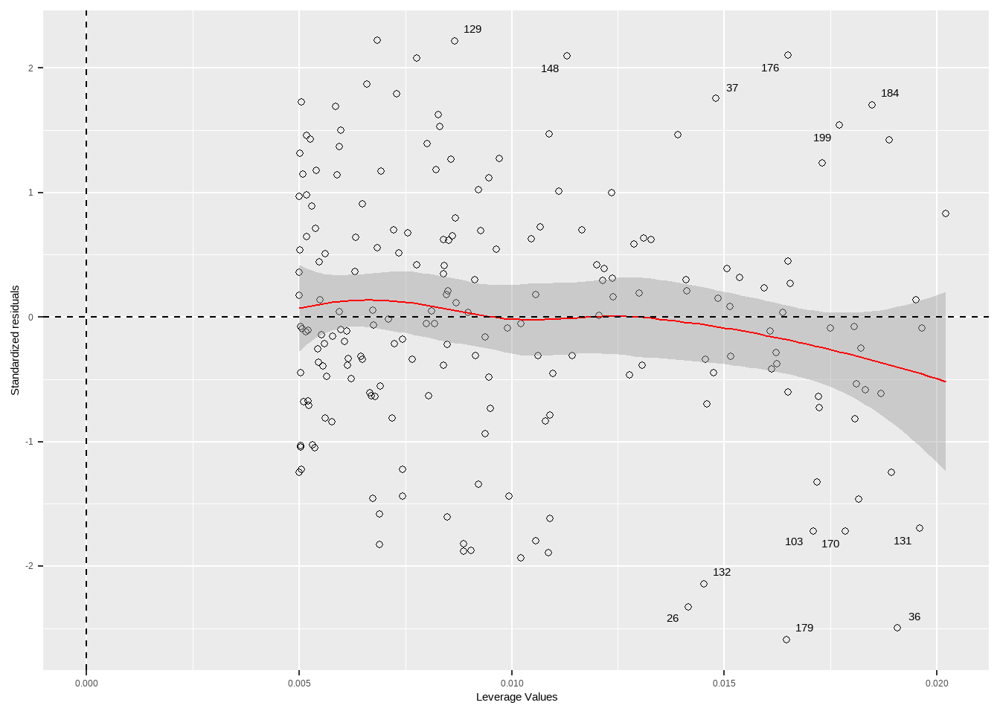

16 线性回归
线性模型用于解释一个连续因变量和一个或多个自变量之间的线性关系。模型形式一般为：
\[ Y=X\beta + \epsilon \]
其中， Y 是因变量，X 是自变量矩阵，β 是回归系数，ϵ 是误差项。

Code
advertising<-read_csv("data/ISLR/Advertising.csv")
p_sales<-function(x){
ggplot(advertising,aes({{x}},sales))+
geom_point(shape=21,color="red")+
geom_smooth(formula = 'y ~ x',method = "lm",se=FALSE)
}
p_sales(TV)|p_sales(radio)|p_sales(newspaper)
16.1 一元线性回归
linear regression model：
\[ Y_i=\beta_0+ \beta_1 X_i+\epsilon_i,其中\epsilon_i\sim N(0,\sigma^2) \]
Code
#linear model specification 线性模型规范
lm_spec <-linear_reg() %>%
set_mode("regression") %>%
set_engine("lm")
lm_spec
#> Linear Regression Model Specification (regression)
#>
#> Computational engine: lmCode
lm_tv <- lm_spec %>% fit(sales ~ TV, data = advertising)
# 模型摘要
summary(lm_tv$fit)
#>
#> Call:
#> stats::lm(formula = sales ~ TV, data = data)
#>
#> Residuals:
#> Min 1Q Median 3Q Max
#> -8.3860 -1.9545 -0.1913 2.0671 7.2124
#>
#> Coefficients:
#> Estimate Std. Error t value Pr(>|t|)
#> (Intercept) 7.032594 0.457843 15.36 <2e-16 ***
#> TV 0.047537 0.002691 17.67 <2e-16 ***
#> ---
#> Signif. codes: 0 '***' 0.001 '**' 0.01 '*' 0.05 '.' 0.1 ' ' 1
#>
#> Residual standard error: 3.259 on 198 degrees of freedom
#> Multiple R-squared: 0.6119, Adjusted R-squared: 0.6099
#> F-statistic: 312.1 on 1 and 198 DF, p-value: < 2.2e-16
# 参数估计值、标准误、统计量、p值
broom::tidy(lm_tv, conf.int=T)| term | estimate | std.error | statistic | p.value | conf.low | conf.high |
|---|---|---|---|---|---|---|
| (Intercept) | 7.0325935 | 0.4578429 | 15.36028 | 0 | 6.1297193 | 7.9354678 |
| TV | 0.0475366 | 0.0026906 | 17.66763 | 0 | 0.0422307 | 0.0528426 |
Code
# 模型统计信息
broom::glance(lm_tv) | r.squared | adj.r.squared | sigma | statistic | p.value | df | logLik | AIC | BIC | deviance | df.residual | nobs |
|---|---|---|---|---|---|---|---|---|---|---|---|
| 0.6118751 | 0.6099148 | 3.258656 | 312.145 | 0 | 1 | -519.0457 | 1044.091 | 1053.986 | 2102.531 | 198 | 200 |
16.1.1 点须图
Code
# 整理回归模型结果
tidy_lm <- tidy(lm_tv, conf.int=T) %>% dplyr::filter(term !='(Intercept)' )
# 绘制点须图
ggplot(tidy_lm, aes(x = estimate, y = term)) +
geom_point(size = 2, color = "black") + # 绘制点
geom_errorbarh(aes(xmin = conf.low,
xmax = conf.high),
height = 0, color = "black") + # 绘制误差线
geom_vline(xintercept = 0, colour = "grey50", linetype = 2) + # 绘制参考线
labs(x = NULL, y = NULL) 
16.1.2 预测
| .pred |
|---|
| 17.970775 |
| 9.147974 |
| 7.850224 |
| 14.234395 |
| 15.627218 |
| 7.446162 |
| 9.765950 |
| 12.746498 |
| 7.441409 |
| 16.530414 |
Code
| .pred_lower | .pred_upper |
|---|---|
| 17.337774 | 18.603775 |
| 8.439101 | 9.856848 |
| 7.024932 | 8.675515 |
| 13.779384 | 14.689405 |
| 15.138794 | 16.115642 |
| 6.582865 | 8.309460 |
| 9.108530 | 10.423370 |
| 12.270304 | 13.222691 |
| 6.577660 | 8.305157 |
| 15.996715 | 17.064114 |
| .pred_lower | .pred_upper |
|---|---|
| 11.5135459 | 24.42800 |
| 2.6828666 | 15.61308 |
| 1.3713181 | 14.32913 |
| 7.7921786 | 20.67661 |
| 9.1825560 | 22.07188 |
| 0.9623058 | 13.93002 |
| 3.3062822 | 16.22562 |
| 6.3027510 | 19.19024 |
| 0.9574921 | 13.92533 |
| 10.0821628 | 22.97867 |
Code
# 比较观测值与预测值
augment(lm_tv, new_data = advertising) %>%
select(sales, .pred) %>%
head(n = 10)| sales | .pred |
|---|---|
| 22.1 | 17.970775 |
| 10.4 | 9.147974 |
| 9.3 | 7.850224 |
| 18.5 | 14.234395 |
| 12.9 | 15.627218 |
| 7.2 | 7.446162 |
| 11.8 | 9.765950 |
| 13.2 | 12.746498 |
| 4.8 | 7.441409 |
| 10.6 | 16.530414 |
predict(lm_tv$fit, new_data = advertising, interval = "confidence") %>%
head(n = 10)
predict(lm_tv$fit, new_data = advertising, interval = "prediction") %>%
head(n = 10)16.2 线性回归假设
一般线性模型中，其自变量全部为固定效应自变量，3点假设：
- 线性度
保证各实测点到回归直线的纵向距离的平方和最小，即使得残差平方和最小。
\[ Q=\sum (Y-\hat Y)^2 \]
Code
# 可视化
augment(lm_tv, new_data = advertising) %>%
ggplot(aes(x = TV)) +
geom_linerange(aes(ymin = sales, ymax = .pred)) +
geom_point(aes(y = sales), color = "red") +
geom_abline(
intercept = coef(lm_tv$fit)[1],
slope = coef(lm_tv$fit)[2],
color = "blue",
linewidth = 1
)
同方差性：残差具有常数方差
残差的正态性
观测的独立性：通常通过审查研究设计来调查
16.3 模型诊断
Code
autoplot(lm_tv, which = 1:6, ncol = 2, label.size = 3)
16.3.1 残差图
预测值与残差的关系，线性度，同方差
Code
# 检查线性回归模型的残差是否与预测值无关，即残差的分布是否随机。
# 残差应该随机分布在0附近
tibble(
`Fitted values`=fitted(lm_tv$fit),
Residuals = residuals(lm_tv$fit)
) %>% ggplot(aes(x = `Fitted values` , y = Residuals)) +
geom_point(pch=21) +
geom_smooth(formula = "y~x",color="red",lwd=0.5)+
geom_hline(yintercept = 0,lty=2) +
labs(x = "Fitted Values", y = "Residuals")
16.3.2 Q-Q图
标准化残差正态性

16.3.3 Scale-Location 图
检查同方差性，如果看到漏斗形（残差随着拟合值增大而增大），则可能存在异方差性问题。
标准化残差平方根图
检查残差的正态性，如果看到残差的分布围绕 0 随机散布，没有明显的模式，模型拟合是理想的。
Code
plot(lm_tv$fit, which = 3)
Code
# 绘制 Scale-Location 图
tibble(
fitted_values=fitted(lm_tv$fit),
StandardizedResiduals = rstudent(lm_tv$fit) ,
) %>%
ggplot(aes(x = fitted_values, y = sqrt(abs(StandardizedResiduals)))) +
geom_point(pch=21) +
geom_smooth(color="red",lwd=0.5)+
labs(title = "Scale-Location Plot",x = "Fitted Values", y = "√|Standardized residuals|")
16.3.4 Cook’s距离

Code

Code
influence.measures(lmodel)
#> Influence measures of
#> lm(formula = y ~ x) :
#>
#> dfb.1_ dfb.x dffit cov.r cook.d hat inf
#> 1 -0.0724 -0.0137 -0.0837 1.431 0.00397 0.103
#> 2 -0.2607 0.1637 -0.2717 1.388 0.03993 0.157
#> 3 0.0822 -0.0555 0.0869 1.554 0.00430 0.169
#> 4 0.2679 0.0174 0.2935 1.178 0.04433 0.100
#> 5 0.1102 0.0548 0.1490 1.408 0.01238 0.116
#> 6 -0.5785 0.1207 -0.5854 0.724 0.13792 0.104
#> 7 0.4851 -0.1676 0.4851 0.925 0.10651 0.114
#> 8 -0.6059 0.3277 -0.6179 0.848 0.16313 0.139
#> 9 0.4957 -0.2572 0.5034 0.996 0.11760 0.135
#> 10 0.0157 -1.0428 -1.1090 9.033 0.68380 0.863 *Code
plot(lm_tv$fit,4) 
Code
threshold <- 4 / (nrow(advertising)-length(lm_tv$fit$coefficients)-2)
tibble(
x = 1:nrow(advertising),
cooks_distance = cooks.distance(lm_tv$fit),
label = factor(if_else(cooks_distance>threshold,x,NA))
) %>%
ggplot() +
geom_segment(aes(
x = x,
xend = x,
y = 0,
yend = cooks_distance ,
)) +
geom_text(aes(
x = x,
y =cooks_distance ,
label =label,
), vjust = -0.2) +
labs(x = "Observation Index", y = "Cook's Distance")
16.3.5 残差-杠杆值图

Code
influence(lmodel)$hat #leverage
#> 1 2 3 4 5 6 7 8
#> 0.1027407 0.1570337 0.1686229 0.1003533 0.1156210 0.1044403 0.1135604 0.1391403
#> 9 10
#> 0.1353478 0.8631394
1/10 + (x-mean(x))^2/(var(x)*9) #leverage manually computed
#> [1] 0.1027407 0.1570337 0.1686229 0.1003533 0.1156210 0.1044403 0.1135604
#> [8] 0.1391403 0.1353478 0.8631394
Code
influence(lmodel)$coefficients #DFBETA
#> (Intercept) x
#> 1 -0.015131790 -0.001678535
#> 2 -0.053246101 0.019647712
#> 3 0.017216660 -0.006821716
#> 4 0.053369207 0.002038393
#> 5 0.022861311 0.006672433
#> 6 -0.101915091 0.012493753
#> 7 0.090627673 -0.018400391
#> 8 -0.109982670 0.034951829
#> 9 0.093779788 -0.028593745
#> 10 0.003248704 -0.126864091
dfbeta(lmodel)
#> (Intercept) x
#> 1 -0.015131790 -0.001678535
#> 2 -0.053246101 0.019647712
#> 3 0.017216660 -0.006821716
#> 4 0.053369207 0.002038393
#> 5 0.022861311 0.006672433
#> 6 -0.101915091 0.012493753
#> 7 0.090627673 -0.018400391
#> 8 -0.109982670 0.034951829
#> 9 0.093779788 -0.028593745
#> 10 0.003248704 -0.126864091
#computing the DFBETA manually for the 10th observation
coef(lm(y~x)) - coef(lm(y[-10]~x[-10]))
#> (Intercept) x
#> 0.003248704 -0.126864091Code
plot(lm_tv$fit,5) 
hat 统计量
Code
tibble(
x = 1:nrow(advertising),
leverage = hatvalues(lm_tv$fit),
StandardizedResiduals = rstandard(lm_tv$fit) ,
cooks_distance = cooks.distance(lm_tv$fit),
label = factor(if_else(cooks_distance>threshold,x,NA))
) %>%
ggplot(aes(x = leverage, y = StandardizedResiduals)) +
geom_point(pch=21) +
geom_smooth(color="red",lwd=0.5)+
scale_x_continuous(limits = c(0, NA)) +
geom_vline(xintercept = 0, lty = 2) +
geom_hline(yintercept = 0, lty = 2) +
ggrepel::geom_text_repel(mapping = aes(label = label))+
labs(x = "Leverage Values", y = "Standardized residuals")
16.3.6 Cook‘s距离和杠杆值
Code
plot(lm_tv$fit,6)